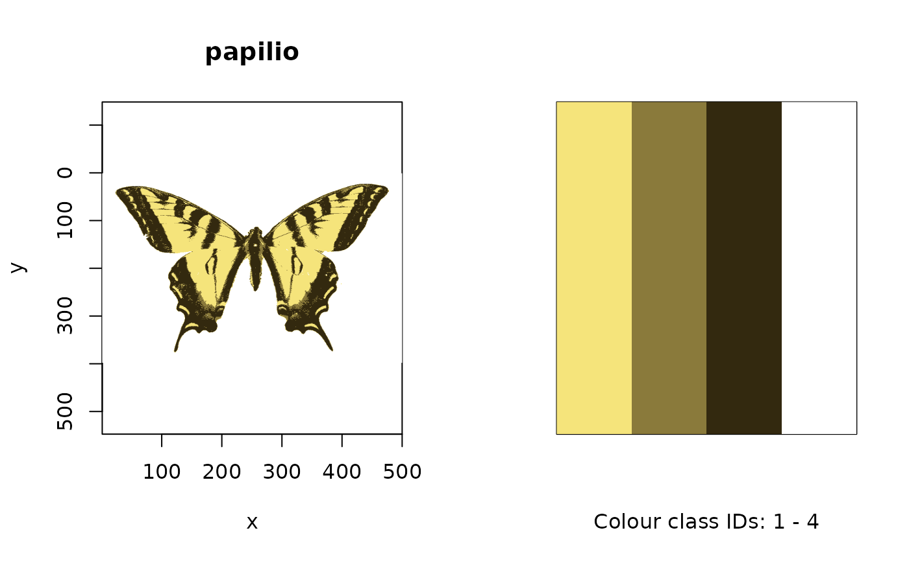
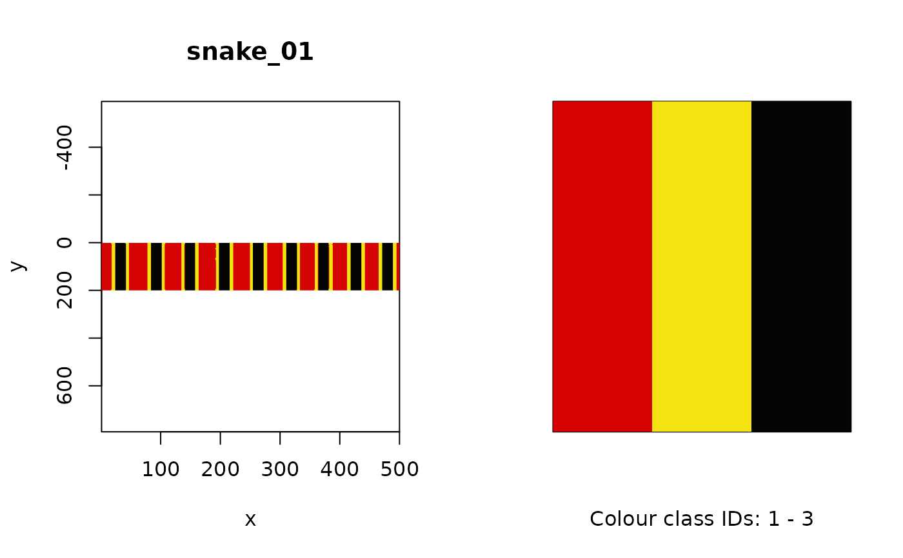

Returns the attributes of, and optionally plots, an image.
Usage
# S3 method for class 'rimg'
summary(object, plot = FALSE, axes = TRUE, col = NULL, ...)Arguments
- object
(required) an image of class
rimg, or list thereof.- plot
logical; plot the image and, if the image is color-classified, the colours corresponding to colour class categories side-by-side? Defaults to
FALSE.- axes
should axes be drawn when
plot = TRUE? (defaults toTRUE).- col
optional vector of colours when plotting colour-classified images with
plot = TRUE. Defaults to the mean RGB values of the k-means centres (i.e. the 'original' colours).- ...
additional graphical options when
plot = TRUE. Also seepar().
Value
Either the RGB values of the k-means centres from the colour-classified image,
or a plot of both the image and specified colours (when plot = TRUE).
Author
Thomas E. White thomas.white026@gmail.com
Examples
# \donttest{
papilio <- getimg(system.file("testdata/images/butterflies/papilio.png", package = "pavo"))
papilio_class <- classify(papilio, kcols = 4)
#> Image classification in progress...
summary(papilio_class)
#> img_ID col_ID name R G B
#> 1 papilio 1 1 0.9612793 0.8932084 0.48314864
#> 2 papilio 2 2 0.5414235 0.4798840 0.22992296
#> 3 papilio 3 3 0.2017427 0.1602007 0.05766217
#> 4 papilio 4 4 0.9994688 0.9994303 0.99910729
# Plot the colour-classified image alongside the colour class palette
summary(papilio_class, plot = TRUE)

# Multiple images
snakes <- getimg(system.file("testdata/images/snakes", package = "pavo"))
#> 2 files found; importing images.
snakes_class <- classify(snakes, kcols = 3)
#> Image classification in progress...
summary(snakes_class, plot = TRUE)
#> Press [enter] for next plot.

#> Press [enter] for next plot.
# }